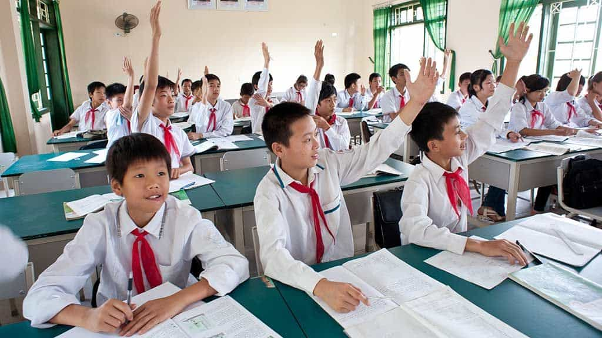

Adam Chan writes about masculinity at apex-ology.com (a blog dedicated to men). In his spare time he tries to work on his daygame.


Nice Guy Syndrome is a worldwide phenomenon. As a man who lives in a predominantly Chinese culture, I constantly bump into crowds of Chinese nice guys. This widespread problem used to shock and anger me. Why couldn’t we just a grow a pair? Why can’t Chinese guys learn to take charge of their lives? The answer is more complex than one would think and has to do with our Chinese culture and values.
As I write this article, please note that I will be including specific values and aspects of Confucianism, and not all of them. I also assume that most readers already understand the psychology and worldview behind Nice Guy Syndrome. And so I won’t be explaining what nice guy syndrome actually is. (Here’s my own summary of Nice Guy Syndrome).
This is the Confucian value where you have to respect your parents and ancestors. It is the most fundamental value of Confucianism, and as a result is a huge value in East Asian culture as well.
Ever since we were boys, asian kids were taught always to respect and please their parents no matter what. This is the toxic mentality behind filial piety. In order to be a good boy, you would have to follow a set of rules that your parents laid out for you. If your parents were happy with you, this meant that you were a good person. If not then you’re just someone bad. This is how many Asian guys develop their sense of self, and the reason why they have low self-esteem.
This moral obligation towards the parents also creates the need to seek approval. As children, we begin to believe that our parent’s happiness towards us is our duty. And so we work really hard to please our parents. The more we believe that this is the case dealing with parents, we also begin to think this is the way the world works. Thus, the habit of seeking to please others also begins to develop.
For many Asian guys, their parents can also be very controlling. Especially the mother. Mothers will exercise a lot of emotional control over their sons. In return, sons will feel obliged to obey or attend to every emotional need that their mothers have. This kind of dynamic really just castrates a lot of Asian men. They don’t know how to stand their ground and assert what they need with power. They would rather avoid feeling like a bad son, as compared to expressing what they really want and upsetting their mother.
This is the Confucian value of caring and concern towards others. It is considered an essence endowed by heaven, and a feeling experienced when a human is altruistic. On Wikipedia, Confucius is said to describe the rules of humaneness as “One should see nothing improper, hear nothing improper, say nothing improper, do nothing improper.”
The need to uphold this value is not reflected through daily recitation every day after we wake up—it is a selfless and do-good mentality that is encouraged by the education system, workplaces, and social spaces. It shapes the way students, corporate professionals, and family members think.
And it produces a certain behavior from Asian nice guys. In order to uphold the “humaneness” in themselves, an Asian guy will do his best not to do anything wrong. Ever. His goal is to be selfless and maintain this image of godly perfection. There is sometimes nothing else that concerns a Asian nice guy other than the self-image that he is a man with “humaneness”.

Asian nice guys would rather appear to be a man with “humaneness” than appear as someone with actual needs and concerns. The idea of being selfish and infringing on other people’s needs is probably an evil act. After all, it would be bad if an Asian guy were to see anything improper, hear anything improper, say anything improper or do anything improper.
In the end, the “humaneness” worldview does harm in rewarding those in the education system, workplace or social place who repress their individual desires, and put their selfless attitudes on display.
Confucius did teach everybody of their place in society. This is the idea that it was everyone’s duty to play their unique role. It becomes a moral obligation.
What this means is that men have to manage all their relationships very well. Men learn to be “good” husbands, fathers, co-workers, citizens and friends, and they base their self-worth on how well they perform these roles. Any man invested in playing these roles will most likely develop a self-image based on these relationships.
Instead of cultivating their sense of self, Asian guys will focus on the self-image they have to project when playing these roles. It is more important to play my role in a relationship rather than assert my needs. Sometimes in order to save the relationship from going bad, an Asian guy would also compromise their needs in order to please the other person in the relationship.
Over time, many Asian guys feel trapped and a sense of powerlessness as they have to put in so much effort to maintain the stability of such relationships. The more invested they are in playing these roles, the less personal power they actually have.
Maybe this guy knows what he’s doing?
It takes a long time for any man to realise how damaging his nice guy behaviours are having in his life. For those Asian guys who are self-aware about their nice guy behaviours and how it relates to confucian values, hopefully they can become leaders and moral guides for the next generation of men being initiated through Confucian thinking and teachings.
Read more: The Difference Between The Nice Guy, The Asshole, And The Alpha Male